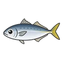
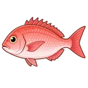
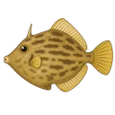
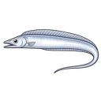
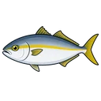
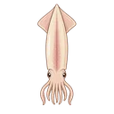
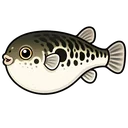

B 案構造（単日 × 全魚種10種・5/8 実データ）
船釣り予想
5/8(金) 関東船釣り 釣果まとめ
25船宿 18港
| 魚種 | 釣果 | 型 | 港 |
|---|---|---|---|
|
 アジ 15便 |
0〜121匹 | 20〜45cm | 金沢八景・浦安 |
|
 マダイ 8便 |
1〜10匹 | 1.2〜3.7kg | 松輪・日立久慈 |
|
|
0〜180匹 | 12〜26cm | 浦安・久比里 |
|
 カワハギ 2便 |
1〜15匹 | 22〜31cm | 久比里 |
|
 タチウオ 2便 |
0〜12匹 | 85〜100cm | 横浜・金沢八景 |
|
 カンパチ 1便 |
1〜3匹 | 8.5〜15.64kg | 下田(銭洲) |
|
|
2〜46匹 | 13〜40cm | 松輪(剣崎沖) |
|
 ヤリイカ 1便 |
1〜21匹 | 28〜45cm | 御前崎 |
|
 フグ 1便 |
0〜8匹 | 20〜33cm | 横浜 |
|
|
0〜8匹 | — | 御前崎 |